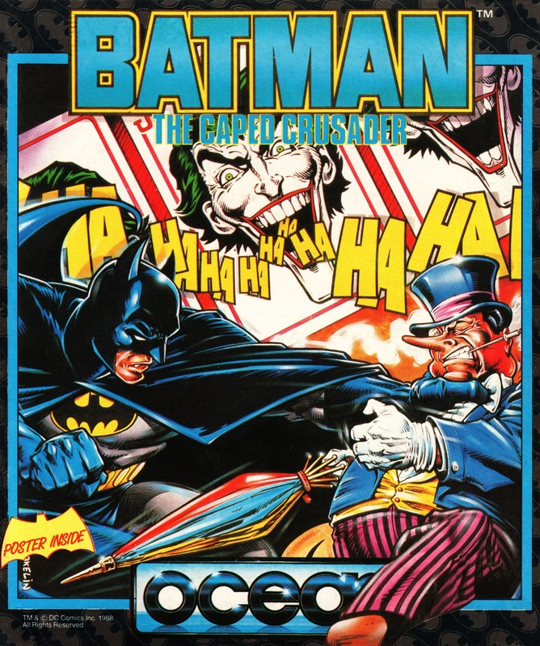
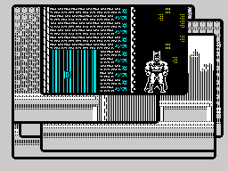
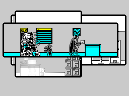
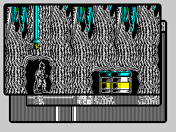
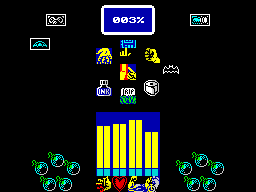

Batman The Caped Crusader


{kind=link}

| Publisher: | Ocean/Special FX |
| Price: | £8.95 Cass, 14.95 Disk |
| Year: | 1988 |
| Source: | CRASH, Issue 60 |

The caped crusader doesn’t seem to have aged well on the Spectrum. First there was Jon Ritman and Bernie Drummond’s isometric Batman (93%, Issue 28) arcade adventure which, while a great game, featured a distinctly plump superhero. For the new game the hero’s thankfully slimmed down, but now he’s started misplacing his false teeth!

Batman’s old opponents have yet to sit back and meekly start collecting their old age pension, though. No, The Penguin and The Joker are back to playing havoc with Gotham City again. The criminal misdeeds of the troublesome twosome fill one game each, with The Penguin’s ‘A Bird In The Hand’ on one side of the tape and The Joker’s ‘A Fête Worse Than Death’ on the other. Holy batvalue-for-money there, Batman.
In the first adventure The Penguin (you know, the one in the top hat with an umbrella and silly laugh) has come up with a new plan to take over the world. Only millionaire Bruce Wayne, alias Batman, can foil this evil scheme. Kerpowing and biffing his way into the penguin-producing factory, he can halt production by destroying the master computer.

A more personal concern provides Batman’s motivation in the second game — Robin has been kidnapped (again). The only clue is a playing card left inside the Batcave — the trademark of the evil Joker. Under close examination it gives a vital clue to the Boy Wonder’s whereabouts.
Only by using his skill and considerable number of ‘Bat’ implements can Batman do his obligatory good deed for the day. In both scenarios, the action begins at the famous Batcave, with Batman gracefully sliding down a pole from his mansion above. Clues and a variety of useful items can be found by a careful search of all the rooms in the Batcave.

Batmobile’s been nicked!
But while life may be safe here, it’s only by venturing outside that the dastardly crimes may be solved. Once outside Batman faces a horde of nasty thugs and machine-gun-toting henchmen. These can be dispatched by a bit of Batboxing or by throwing the batarang at them. Get careless and your energy’s soon drained by a hail of bullets. Energy can be restored by eating if you can find some food in time.
Objects collected are put into Batman’s inventory, which is accessed by pressing fire and down. A simple icon system allows objects to then be used or dropped. It’s also possible to turn the sound on/off, alter the background paper colour and even to choose between monochromatic graphics or glorious colour (although there’s a small amount of clash). The key to success in either of Batman’s crimebusting adventures is using objects at the right place. Useful items range from keys (for unlocking doors) to a red nose which is so silly that when Batman wears it he becomes perfectly disguised — for a while at least.

All the action takes place in true comic book style: each new location entered is overlaid on top of the previous ones, and as they are of varying sizes, this creates a sort of comic strip patchwork effect. Batman himself is animated in great detail, his cape flowing as he walks around an equally detailed play area (both outside and inside buildings). Colour is used well in the backgrounds, cleverly avoiding a lot of attribute clash, while creating an atmospheric environment for the fascinating gameplay.
Batman is not just technically impressive, but is also an immensely playable arcade adventure with a large playing area and plenty of devious puzzles to solve. In my opinion Batman has really captured the spirit of the comics and TV series making it an essential purchase. Whatever you do, don’t miss it!
PHIL ... 93%
PUT IN TO BAT
- Search the Batcave for useful objects before venturing outside.
- Use the Batarang to stun the henchmen.
- Save the red nose for emergencies (it makes you invisible).
- Read the captions which appear at some locations — they contain cryptic clues.
- Don’t over eat: save food for when your energy is low.
- Experiment with various objects by trying to use them in different locations.
Not content with having a hit Smash game with the first Batman, Ocean have made another. And why not when it’s as good as this? The game is set out in a comic book style with hints on what to do appearing in the corner of each screen, similar to the descriptions of places in comics. The graphics themselves are excellent, cartoon-style and full of detail, even down to the King Kong swinging on the Empire State Building in the background! The puzzles are not too difficult to fathom, with the little hints helping a great deal but not spoiling the game too much. Ocean have made a fantastic job on Batman and being in two parts you get excellent value for money. Brilliant!
NICK ... 93%
Batman is one of my favourite comic book characters and it’s great to see a game that is not only very playable, but also makes a serious attempt to do justice to the character. The Batman sprite is great, he really looks and moves just like the guardian of Gotham City. The baddies are a real pain in the behind, not to say face, chest and anywhere else they frequently manage to hit, but Batman can’t be stopped. No his fight for truth and justice must go on, through ‘game over’ after ‘game over’. Some of the puzzles need real lateral thinking to solve, as do the uses for some of the collectable objects, like the toilet roll. One thing that requires little consideration is whether or not to buy this. Believe me this is brilliant and will appeal to both Batman fans and games-players generally.
MARK ... 92%
THE ESSENTIALS
| Joysticks: | Cursor, Kempston, Sinclair |
| Graphics: | Superbly-animated sprites fight it out in an excellently-drawn ‘comic strip’ play area |
| Sound: | A great 48K title tune and some neat, bashing spot effects, but no enhancements on the 128K machines |
| Options: | Definable keys. Two scenarios to play |
| General rating: | A finely-honed arcade adventure which is surely the best comic licence ever — you’d be batty to miss it |
| Presentation: | 91% |
| Graphics: | 91% |
| Sound: | 88% |
| Playability: | 92% |
| Addictive qualities: | 91% |
| Overall: | 93% |